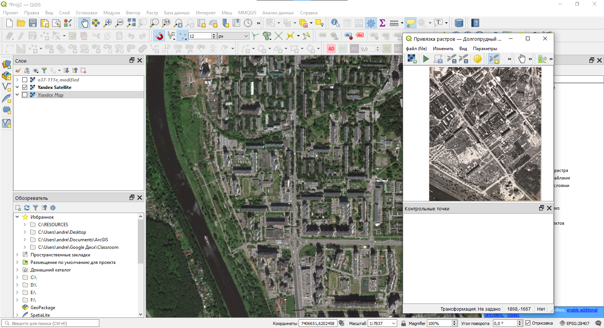
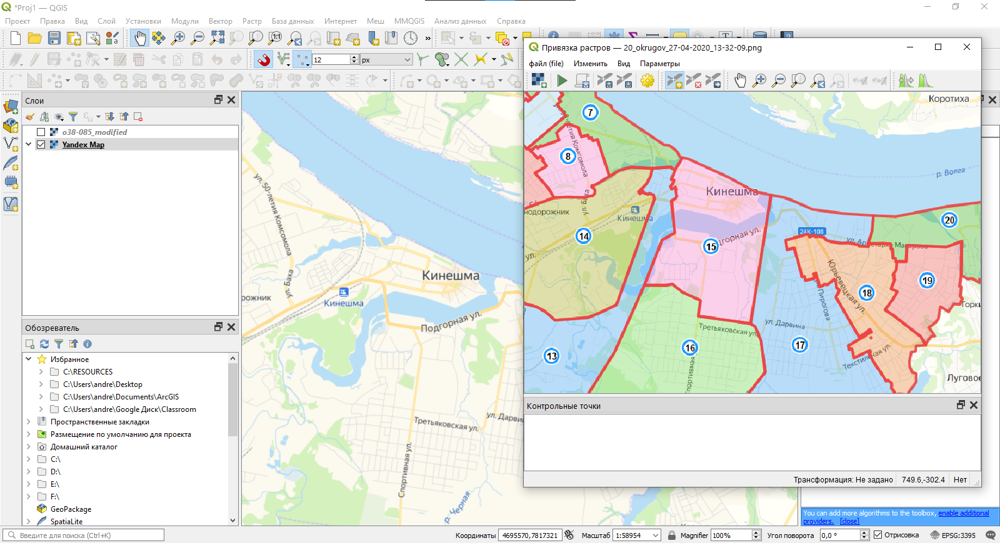

Упражнение 5 Привязка графических материалов
Архив с данными и контрольным листом
5.1 Введение
Цель задания — знакомство с привязкой и трансформированием растровых геоизображений.
Необходимая теоретическая подготовка: Системы координат и проекции карт, привязка геоизображений, трансформирование геоизображений. Разграфка, номенклатура и проекция топографических карт. Методы трансформации: аффинное, проективное, полиномиальное, метод резинового листа.
Необходимая практическая подготовка: Знание основных компонент интерфейса QGIS (менеджер источников данных, панель слоёв, фрейм карты), умение выполнять масштабирование и перемещение по карте, определять координаты курсора.
Исходные данные: Растровые изображения листов топографических карт и тематических карт, сканированные аэрофотоснимки.
Результат: Привязанные и трансформированные растровые изображения, пригодные для непосредственно использования в ГИС.
5.1.1 Контрольный лист
- Определить систему координат для привязки
- Привязать растровую карту по известным координатам точек
- Оценить точность привязки карты
- Привязать растровую карту путём интерактивного определения положения точек привязки
- Использовать базовые карты из сети Интернет для привязки
5.2 Привязка растра по известным координатам
Скачайте архив с исходными данными и распакуйте его в свою рабочую директорию
Найдите в папке
raw_imagesизображениеo38-085.jpg. Это отсканированный лист топографической карты масштаба 1:100 000 на город Кинешма и его окрестности.
Топографические карты на территорию СССР составлялись в проекции Гаусса-Крюгера. Задание проекции позволяет ввести систему плоских прямоугольных координат — соответствующая сетка наносится на лист карты. Когда вы работаете с листом карты в бумажном виде, вы можете определить координаты любой точки, проведя несложные измерения относительно линий сетки, измерить расстояния, углы и площади. Использование ГИС значительно упрощает рутинные операции, поскольку все объекты в ГИС-проекте помещены в некоторую систему координат. Но простые растровые изображения таким функционалом не обладают. Чтобы использовать растр в геоинформационной среде, необходимо выполнить его привязку — то есть задать соотношение между внутренней системой координат растра (связанной с его строками и столбцами) и «внешней» проецированной системой координат.
Для выполнения привязки нам нужно определить несколько пар точек, для которых известны и «внутренние», и «внешние» координаты. Пересечения линий сетки прямоугольных координат идеально подходят в этом качестве, поскольку их «внешние» координаты подписаны вдоль рамок карты.
Определите прямоугольные координаты пересечений линий сетки, ближайших к углам карты. Если какое-то из пересечений читается нечётко, возьмите одно из соседних.
Запустите QGIS
В QGIS запустите инструмент для привязки растров («Растр» — «Привязка растров»)

- Используя кнопку
 , добавьте файл
, добавьте файл o38-085.jpgв окно инструмента привязки

- В окне привязки по умолчанию активен инструмент добавления опорных точек. С помощью мыши увеличьте изображение северо-западного угла карты, а затем щёлкните левой кнопкой мыши по пересечению линий сетки, координаты которого вы определили раньше. В появившемся окне введите координаты. Обратите внимание на следующие моменты:
- В проекции Гаусса-Крюгера ось X считается направленной на север, ось Y — на восток. В QGIS и большинстве других геоинформационных программ ось X направлена на восток, ось Y — на север. Поменяйте местами координаты при необходимости
- Координаты, подписанные вдоль рамки карты, измеряются в километрах. Координаты, которые вам нужно ввести для привязки, должны быть измерены в метрах.
Сверьтесь с изображением ниже, чтобы убедиться, что вы всё делаете правильно:

Чтобы включить подписи идентификаторов точек, зайдите в «Параметры» — «Настройки привязки растров»
Аналогичным образом добавьте остальные контрольные точки по углам карты.
Добавьте ещё одну опорную точку в центре карты. Координаты определите самостоятельно.

Изучите информацию, которая отображается в таблице внизу. «X источника» и «Y источника» — это координаты точек привязки на исходном растре, измеренные в пикселях растра от левого верхнего угла. «X назначения» и «Y назначения» — координаты на местности. В столбцах «dX», «dY» и «Невязка» будут отображаться несхождения в определении координат. Сейчас там отображаются нули, поскольку мы не задали настройки трансформации.
Откройте интерфейс настроек трансформации растра, нажав на кнопку
 . Изучите доступные параметры.
. Изучите доступные параметры.Самостоятельно определите значение параметра «Тип трансформации».
Параметр «Метод интерполяции» установите в значение «Линейная»
Чтобы установить целевую систему координат, нажмите кнопку


Нам необходимо выбрать целевую систему координат. Мы помним, что топографические карты составляются в проекции Гаусса-Крюгера, однако для задания системы координат этого недостаточно. Система координат состоит из двух основных элементов: геодезической основы и параметров проектирования. В геодезическую основу входят параметры вспомогательной поверхности, аппроксимирующей земной шар (для эллипсоида: большая полуось и эксцентриситет), а также ряд параметров, определяющих положение этой фигуры в теле Земли. В параметры проектирования входит вид проекции (например, равноугольная поперечно-цилиндрическая) и конкретные параметры проектирования (например, средний меридиан или широта начала отсчёта долгот).
Существуют десятки эллипсоидов и сотни проекций, что в сочетании с конкретными значениями параметров даёт десятки тысяч возможных систем координат. Чтобы систематизировать это множество, существуют базы данных о системах координат. Крупнейшая из открытых баз создана под эгидой European Petroleum Survey Group (EPSG). Системы координат, соответствующие отечественным топографическим картам, также включены в эту базу (причём в нескольких вариантах)
Найдите в списке систем координат две записи:
Pulkovo 1942 / Gauss-Kruger zone 8иPulkovo 1942 / Gauss-Kruger 8N. Сравните их параметры. В чём различие между двумя этими системами координат? Какую из них следует использовать в нашем упражнении? Выберите нужную систему координат и закройте окно выбора проекцииТеперь, когда вы задали параметры привязки, нужно указать, куда будет сохранён привязанный файл. Это задаётся настройкой «Целевой растр». Укажите, что растр нужно сохранить в папку
referenced_imagesпод именемo38-085_modified.tif. Остальные параметры оставьте по умолчанию.Закройте окно настроек привязки. Привязка не запустится автоматически: чтобы запустить процедуру, нужно нажать кнопку
 . Но пока не делайте этого.
. Но пока не делайте этого.Изучите величины ошибок, которые отображаются в таблице внизу. Величины ошибок отображаются в пикселах исходного растра. Обычно в практике привязки стараются добиться, чтобы ошибка не превышала 0,5 пиксела (с рядом оговорок). В нашем же случае исходный картографический материал отсканирован с невысоким разрешением, и такой точности достичь не получится. Для учебного упражнения достаточно добиться точности порядка 1,5 пиксела. Если точность привязки какой-либо из ваших точек значительно превышает это пороговое значение, удалите точку и установите её заново.
Когда вам удастся добиться точной привязки, нажмите кнопку
. QGIS выполнит привязку и попытается добавить изображение к карте. Если при этом появится всплывающее окно выбора параметров трансформации, нажмите ОК.Закройте окно привязки растров. Окно QGIS примет вид, аналогичный представленному ниже:

- Сохраните проект QGIS в рабочую директорию (
Ex01). Сделайте снимок экрана и вставьте его в отчёт.
Снимок экрана №1. Привязанная топографическая карта в окне QGIS.
5.3 Добавление базовой карты
Мы успешно привязали растровое изображение топографической карты, и теперь можем определять координаты, измерять расстояния и площади по карте при помощи простого ГИС-инструментария. Однако наша карта пока «висит в воздухе». Давайте сравним её с изображением какой-нибудь популярной Интернет-карты, например, Яндекс.Карт или OpenStreetMap.
Базовые карты из сети интернет могут быть загружены в настольный ГИС-пакет с использованием протокола WMS, WFS или аналогичных. На базовом уровне знакомства с ГИС нас не интересуют технические подробности реализации, поэтому мы воспользуемся простым инструментом загрузки — подключаемым модулем (плагином) QuickMapService. Он позволяет добавлять многие карты из сети интернет «в один клик».
- Модуль QuickMapService не включается в базовую поставку QGIS, его нужно установить отдельно. Для этого откройте меню «Модули» — «Управление и установка модулей…». Дождитесь, пока сведения о модулях загрузятся.

В открывшемся окне управления модулями начните вводить
QuickMap...в строке поиска. Модули будут отфильтрованы по названию.Выберите модуль QuickMapServices в списке и нажмите кнопку «Установить» внизу окна. Дождитесь, пока модуль загрузится и установится.

- После установки модуля его инструменты появляются в меню «Интернет» — «QuickMapServices». По умолчанию доступно небольшое число источников, но его можно увеличить. Для этого перейдите в настройки модуля и на вкладке «Загрузить сервисы» нажмите «Получить дополнительные источники данных». Подождите, пока дополнительные источники будут добавлены к модулю, и закройте настройки

Теперь вы можете добавить какую-нибудь базовую карту из сети Интернет, просто выбрав её в списке. Добавьте карту Яндекса в проект.
Включая и отключая изображение топоографической карты в панели слоёв, оцените, насколько хорошо она ложится на базовую карту Яндекса.

Для любознательных: обратите внимание на настройки прозрачности слоёв, а также на подключаемый модуль MapSwipe Tool.
Удалите из проекта карту Яндекса и загрузите любую другую базовую карту на ваш выбор.
Сохраните проект и сделайте снимок экрана.
Снимок экрана №2. Привязанная топографическая карта на фоне базовой карты из Интернета.
5.4 Оценка точности привязки
В реальных задачах бывает необходимо не только привязать растр, но и оценить точность привязки. Для этого часть опорных точек переводятся в класс контрольных. Эти точки не участвуют в вычислении параметров преобразования, поэтому по ним можно проверять абсолютную точность привязки.
Создайте новый проект QGIS.
Начните выполнять привязку растра
o37-111e.gif. Разместите пять опорных точек, как в предыдущем разделе упражнения. Настройте параметры трансформации. Самостоятельно определите, какую систему координат использовать. Укажите, что результирующий файл должен быть записан в каталогreferenced_images.

Теперь добавьте ещё четыре опорные точки между «угловыми» и «центральной». Можно воспользоваться подписями вдоль линий сетки на карте.
Когда вы добавите дополнительные точки, отключите их: снимите галочки в таблице возле их названий.

- Оцените максимальную величину ошибки по контрольным точкам. Запишите её с точность до второго знака после запятой в отдельный текстовый файл.
Обратите внимание, что величина ошибки измеряется в пикселах. Чтобы получить абсолютное значение, нам нужно умножить эту величину на размер пиксела на местности
Запустите привязку растра. Добавьте привязанный растр в проект QGIS, если это не произошло автоматически.
Откройте свойства добавленного растра и выясните (на вкладке «Информация»), каков размер его пикселя в целевой системе координат
Рассчитайте максимальное значение абсолютной ошибки привязки.
Не закрывайте QGIS после окончания этой части упражнения. В следующей части мы будем работать с этой же территорией
5.5 Использование координат с карты
Топографические карты — наиболее удобный материал для привязки, поскольку нужные системы координат известны, а точные значения координат подписаны у линий сетки. Однако в большинстве случаев привязка требуется таким материалам, у которых ни система координат, ни точные их значения не известны наперёд — например, архивные аэрофотоснимки и космические снимки. В таком случае придётся не вводить координаты вручную, а считывать их значения из окна карты.
Добавьте к проекту любую базовую карту, по которой вам удобно ориентироваться, и отключите слой
o37-111e_modified.Переместитесь по карте на юг, в окрестности г. Долгопрудный. Область, с которой вам предстоит работать — район между парком культуры и отдыха (ПКиО) и каналом им. Москвы

Откройте модуль привязки и загрузите в него изображение
Долгопрудный 001.jpg. Это фрагмент аэрофотоснимка, полученного приблизительно 20-30 лет назад.Добавьте или включите мозаику космических снимков в качестве базовой карты.

- Изображение на аэрофотоснимке повёрнуто относительно изображения базовой карты. Чтобы облегчить опознавание опорных точек, мы можем повернуть изображение в основном окне QIGS. Для этого найдите в нижней правой части окна настройку «Угол поворота» и введите значение
-38.

- Начните расстановку контрольных точек. Установите первую точку нажатием левой кнопки мыши. Затем, когда появится окно ввода координат, не вводите координаты вручную, а нажмите кнопку «С карты». Окна привязки и ввода координат будут свёрнуты, давая возможность найти соответственную точку на карте. Найдя точку, кликните по ней левой кнопкой мыши. Координаты точки (в системе координат проекта) будут считаны с карты и подставлены в интерфейс ввода.

Введите таким образом 8-10 опорных точек
Настройте параметры привязки. Используйте проективное преобразование.
Проверьте ошибки положения точек. Отключите точки с самыми большими ошибками. Поскольку референсное изображение имеет более низкое разрешение, в этом упражнении не нужно добиваться высокой точности привязки. Ошибка порядка 10 пикселов может считатсья приемлемой.
Запустите привязку. Когда привязанное изображение добавится в проект, сравните его с базовой картой.

Чтобы убрать чёрные рамки вокруг изображения, можно воспользоваться следующим способом. Откройте настройки слоя привязанного снимка, перейдите на вкладку «Прозрачность» и введите дополнительное значение «нет данных», равное 0. QGIS будет воспринимать пиксели изображения, имеющие нулевую яркость, как «нет данных», и скроет их при визуализации.
Верните угол поворота окна карты в исходное значение (0°)
Сохраните проект QGIS и сделайте снимок экрана
Снимок экрана №3. Привязанный аэрофотоснимок.
- Закройте проект QGIS
5.6 Привязка с использованием линейной трансформации
Обычно, говоря о привязке, мы рассматриваем исторические картографические изображения или материалы дистанционного зондирования. Современные геоинформационные продукты, как правило, поставляются в виде, непосредственно пригодном для использования в ГИС-среде. Но иногда возникает необходимость выполнять привязку и современных материалов — например, схем и эскизов, вычерченных поверх современных материалов. В таком случае для привязки изображения можно обойтись двумя-тремя опорными точками.
Изучите изображение
20_okrugov_27-04-2020_13-32-09.png. На какой основе оно составлено?Откройте проект QGIS с привязкой на окрестности города Кинешма, который вы создавали в первой части этого упражнения.
Добавьте из набора QuickMapServices ту базовую карту, на основе которой составлено изображение из п. 1
Откройте свойства слоя базовой карты и перейдите на вкладку «Источник». Определите, в какой системе координат он поставляется. Запомните или запишите эту систему координат. QGIS использует базу данных о системах координат EPSG, поэтому достаточно запомнить только EPSG-код
Закройте свойства слоя и откройте свойства проекта («Проект» — «Свойства…» или
Ctrl+Shift+P). Перейдите на вкладку «Система координат».
Обратите внимание, что система координат базовой карты отличается от системы координат проекта. Все основные современные ГИС-пакеты поддерживают так называемое «перепроецирование на лету» — если в проект добавлено несколько источников с разными системами координат, то программа автоматически пересчитввает координаты, приводя всё к единой системе.
Измените систему координат проекта на ту систему, которая используется в слое базовой карты. Обратите внимание, как изменилось изображение топографической карты.
Отключите изображение топографической карты.
Запустите модуль привязки растров и добавьте в него файл
20_okrugov_27-04-2020_13-32-09.png.Увеличьте изображение в окне QGIS таким образом, чтобы детализация базовой карты соответствовала детальности основы с привязываемого изображения.

Для самопроверки: такая детальность соотвествует масштабу порядка 1:60 000.
Добавьте две опорные точки в разных углах изображения.
Настройте параметры привязки следующим образом:
- Тип трансформации: линейная
- Метод интерполяции: линейная
- Также включите опцию «Только создать World-файл». В результате применения этой опции привязка не создаст новое изображение, а вместо этого создаст файл с параметрами привязки
- Запустите привязку изображения. Когда изображение будет добавлено в проект, сохраните проект и сделайте снимок экрана.
Снимок экрана №4. Привязанное изображение схемы избирательных округов..
Примечание: в последующих упражнениях мы не будем указывать вам, когда нужно сохранять проект. Вы будете делать это самостоятельно.
В проводнике Windows перейдите в папку
raw_imagesи найдите файл20_okrugov_27-04-2020_13-32-09.wld. Это World-файл. Откройте его с помощью блокнота и изучите его содержимое. Самостоятельно найдите и изучите информацию о том, какие коэффициенты в нём представлены.Ответьте на вопросы в контрольном листе